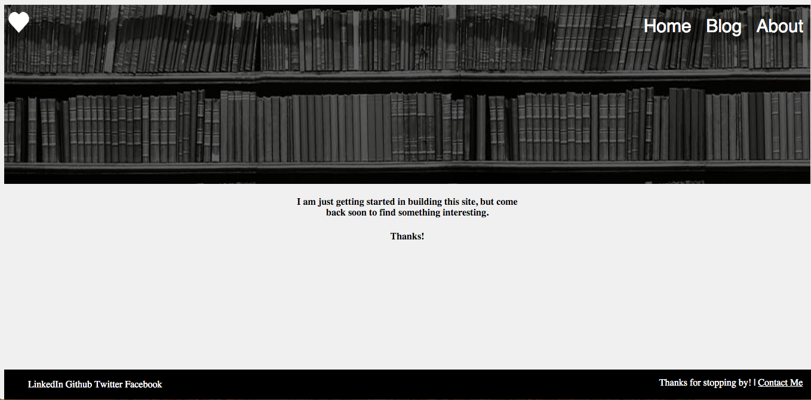

This site went through a few iterations before reaching its current state.
Round one looked like this.
When I looked at other people's personal sites, I liked how they incorporated prominent but faded pictures in the front of their site, so that's where I started. Plus, I'm a nerd for books, so I always like including books or libraries wherever I can.
I liked it, but I wanted to try a few other examples before committing to one.
But, I also wanted to experiment a bit with something simpler and sleeker.
I am always most impressed by the simplest design styles. And I had fun
experimenting with creating the floating shapes in the front of the screen
and making them look good on different screen sizes.
Yet, this design needed a bit more color and personality, which led me to
the current incarnation. Send me a message with one of the social links below
and let me know what you think.